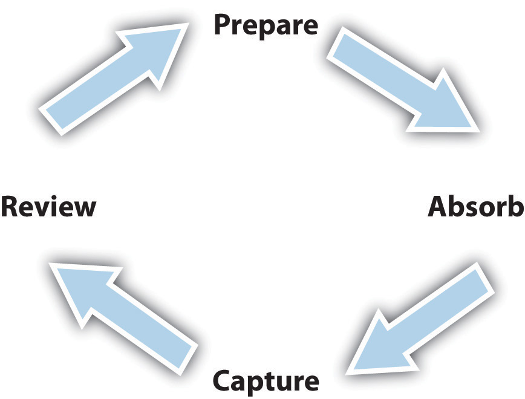

Assess your present knowledge and attitudes.
| Yes | Unsure | No | |
|---|---|---|---|
| 1. I understand all the benefits of a college education for my future life. | |||
| 2. I have clear-cut career interests and have already planned my college program to prepare me best for my future work. | |||
| 3. I am aware of how my previous educational background has prepared me for college work. | |||
| 4. I have all the personal traits of a successful college student. | |||
| 5. I know how the learning process functions and make an effort to maximize my learning at each step in this process. | |||
| 6. I know my personal learning style and use it to my advantage when learning new things. | |||
| 7. I know how to pay attention to gain the most from my classes. | |||
| 8. I am aware of my college’s policies for academic honesty and behavior on campus. | |||
| 9. I know where to find all the resources of my college that can help me succeed both academically and personally. | |||
| 10. I am confident I can earn the grades I need to achieve success in my college courses. | |||
| 11. I know the first year of college will be the most difficult, but I am fully prepared and take responsibility for my own success. | |||
| 12. I am taking steps every day to ensure I am successful in every aspect of the college experience. |
Think about how you answered the questions above. Be honest with yourself. On a scale of 1 to 10, how would you rate your present skills for succeeding in college?
| Not very strong | Very strong | |||||||||||||||||
|---|---|---|---|---|---|---|---|---|---|---|---|---|---|---|---|---|---|---|
| 1 | 2 | 3 | 4 | 5 | 6 | 7 | 8 | 9 | 10 | |||||||||
In the following list, circle the three most important areas in which you think you can improve:
Are there other areas or skills that need more attention in order for you to succeed in college? Write down other things you feel you need to work on.
__________________________________________________________________
__________________________________________________________________
__________________________________________________________________
Here’s what we’ll work on in this chapter:
Congratulations on your decision to attend college! For the great majority of college students, it really was your decision—not just an automatic thing to do. If you happen to be one of the few who just sort of ended up in college for want of anything better to do, the benefits of college will soon become obvious.
The reason for this book, and for almost all college courses, is that college does require commitment and effort. Like everything else in life that leads to meaningful results, success in college is not automatic. But when you apply yourself to your studies using the skills you’ll learn in this book, you’ll find you can succeed.
When asked, most students say they’re in college primarily for the job or career they expect to follow after college. And they are correct that college pays off enormously in terms of future earnings, job security and stability, and job satisfaction. Every statistic shows that people with a college education will make much more in their lifetime (much, much more than the cost of college itself) and be much happier with the work they do.
But job and career issues are only a part of the big picture. A college education results in many other personal benefits, and these also should be part of your motivation for doing well and continuing with your college plans. Here are a few additional, less tangible benefits of a college education:
A college education is correlated with greater success in all those areas, even though most students are usually more concerned with making it through the next class or test than the rest of their lives. But sometimes it helps to recall what a truly great step forward you are taking!
Sadly, however, it’s important to recognize that some students do not succeed in college and drop out within the first year. Sometimes it’s due to an unsolvable financial problem or a personal or family crisis, but most of the time students drop out because they’re having problems passing their courses. The two biggest causes of this problem are a lack of motivation and not having learned the skills needed to succeed in college.
A book like this one can help you stay motivated when things get tough, but it can’t necessarily give you motivation to start with. That’s part of what you yourself have to bring to college. What we can promise you is that you can learn the skills for succeeding in college.
Special skills are needed because college isn’t the same as high school. Throughout this book, we’ll be looking at the many ways college is different from high school. To name just a few, college is different in study skills needed, in personal skills related to being independent, in social skills for getting along with instructors and others on campus, in financial realities, in matters of personal health, and more.
Remember, you can learn whatever you need in order to succeed. That’s what this book is all about. You’ll learn how to get the most out of going to class. You’ll learn how to study in ways that use your time efficiently and help you pass tests. You’ll even learn how to remember what you read in your college textbooks. You’ll learn how to manage your time more effectively than you might have in the past, so that studying is less a burden and more a simple routine. You’ll even learn how things like eating well and getting enough sleep and exercise make it easier to do well in your classes.
One warning: you might not at first see an immediate payoff for everything you read in this book. When it comes to certain things, such as tips for how to take good notes in class to help you study later on for a test, you will get specific, practical advice you can put to use immediately to get a better grade. But not everything is as obvious or immediately beneficial. Some of the things you’ll read about here involve ideas you’ll need to think about. Some things will help you get to know yourself better and understand more clearly what you really want from your education and how to go about attaining them.
But we promise you this: if you care enough to want to succeed in college and care enough to read these chapters and try to use the information, suggestions, and tips presented here, you will succeed in college.
Succeeding in college is rather like succeeding in life. It’s really much more about you than it is about college. So the most important place to start is to consider why you’re here, what matters to you, and what you expect to get out it. Even if you have already thought about these questions, it’s good to reaffirm your commitment to your plan as we begin to consider what’s really involved in being a college student.
Take a few minutes and write down short answers to the questions in Activity 1. Be honest with yourself, and write down what you really feel. You are not writing for an instructor here—not what you think someone expects to hear—and you are not being graded on your answers!
How long do you anticipate being in college?
________________________________________________________
How many courses will you need to take per term to finish college in your planned time period?
________________________________________________________
What do you anticipate will be the most difficult part of completing college?
________________________________________________________
Are you confident you will be able to overcome any possible difficulties in completing college?
________________________________________________________
Were you able to easily answer the questions in Activity 1? How confident do you feel about your plan?
These are important questions to think about for the simple reason that students who have a clear plan and who are prepared to overcome possible obstacles that may arise along the way are much more likely to succeed in college. In other words, just thinking in a positive way about your future can help that future come true!
The word valuesAn object or quality a person believes is desirable as a means or as an end in itself. refers to things that matter to a person. What makes you feel good? What things would you be doing if you had all the time, money, and opportunities in the world? Questions like these help us define our own values. Every individual has his or her own values.
Thinking about your own values can help you know what you want from life and from college. Take a moment and consider the list of things in Activity 2 that are valued by some people. For each value, rate how important that thing is to you.
Following is a list of things that different people say they value. For each item on this list, indicate how important it is to you yourself by ranking it as very important (5), not important (0), or somewhere in between.
| Value | Not important | Very important | ||||
|---|---|---|---|---|---|---|
| Making a good income | 0 | 1 | 2 | 3 | 4 | 5 |
| Having good friends | 0 | 1 | 2 | 3 | 4 | 5 |
| Learning new things about your interests | 0 | 1 | 2 | 3 | 4 | 5 |
| Having a nice car | 0 | 1 | 2 | 3 | 4 | 5 |
| Having intelligent conversations | 0 | 1 | 2 | 3 | 4 | 5 |
| Staying current with the news | 0 | 1 | 2 | 3 | 4 | 5 |
| Playing sports | 0 | 1 | 2 | 3 | 4 | 5 |
| Hanging out with friends | 0 | 1 | 2 | 3 | 4 | 5 |
| Playing computer or video games | 0 | 1 | 2 | 3 | 4 | 5 |
| Cooking | 0 | 1 | 2 | 3 | 4 | 5 |
| Online social networking | 0 | 1 | 2 | 3 | 4 | 5 |
| Sleeping | 0 | 1 | 2 | 3 | 4 | 5 |
| Reading a good book | 0 | 1 | 2 | 3 | 4 | 5 |
| Traveling to new places | 0 | 1 | 2 | 3 | 4 | 5 |
| Shopping | 0 | 1 | 2 | 3 | 4 | 5 |
| Being liked by others | 0 | 1 | 2 | 3 | 4 | 5 |
| Studying and reading textbooks | 0 | 1 | 2 | 3 | 4 | 5 |
| Having nice clothing | 0 | 1 | 2 | 3 | 4 | 5 |
| Watching television | 0 | 1 | 2 | 3 | 4 | 5 |
| Enjoying time alone | 0 | 1 | 2 | 3 | 4 | 5 |
| Getting out in nature | 0 | 1 | 2 | 3 | 4 | 5 |
| Working your job | 0 | 1 | 2 | 3 | 4 | 5 |
| Looking good, personal hygiene | 0 | 1 | 2 | 3 | 4 | 5 |
| Meeting new people | 0 | 1 | 2 | 3 | 4 | 5 |
| Going to movies or entertainments | 0 | 1 | 2 | 3 | 4 | 5 |
| Eating nice meals out | 0 | 1 | 2 | 3 | 4 | 5 |
| Exercising, being physically active | 0 | 1 | 2 | 3 | 4 | 5 |
| Being your own boss | 0 | 1 | 2 | 3 | 4 | 5 |
| Having a positive romantic relationship | 0 | 1 | 2 | 3 | 4 | 5 |
| Engaging in your hobbies | 0 | 1 | 2 | 3 | 4 | 5 |
| Setting your own schedule | 0 | 1 | 2 | 3 | 4 | 5 |
| Volunteering your time for a good cause | 0 | 1 | 2 | 3 | 4 | 5 |
| Cleaning house | 0 | 1 | 2 | 3 | 4 | 5 |
| Attending classes | 0 | 1 | 2 | 3 | 4 | 5 |
| Going to religious services | 0 | 1 | 2 | 3 | 4 | 5 |
| Talking on the telephone, texting, e-mail | 0 | 1 | 2 | 3 | 4 | 5 |
| Going to parties | 0 | 1 | 2 | 3 | 4 | 5 |
| Participating in clubs, organized activities | 0 | 1 | 2 | 3 | 4 | 5 |
| Other: __________________________ | 0 | 1 | 2 | 3 | 4 | 5 |
| Other: __________________________ | 0 | 1 | 2 | 3 | 4 | 5 |
Look back at the values you rated highly (4 or 5) in Activity 2, which probably give a good indication of how you enjoy spending your time. But now look at these things you value in a different way. Think about how each relates to how you think you need to manage your time effectively while in college. Most college students feel they don’t have enough time for everything they like to do. Do some of the activities you value most contribute to your college experience, or will they distract you from being a good student?
Students who enter college with their eyes open and who think about their own values and motivations will be more successful. If you have a good idea of what you want from life, the rest of it can be learned. We’ll start right away in Chapter 2 "Staying Motivated, Organized, and On Track" by helping you stay motivated and manage your time well. The following chapters will then lead you through learning how to study well and everything else.
If you’ve just begun college, should you already know what career you seek in the future and what courses you should take or what you should majorA subject or field of study chosen by a college student representing his or her principal interest. in? Good question!
Some students say they have known from a very early age what they want to do after college, choose the college that is best for that plan, never waiver from the plan and choose each course with the one goal in mind, and then enter their chosen career after college or graduate school. At the other extreme, some students have only a vague sense of direction before beginning college, take a wide variety of courses, select a major only when they reach the point that they must major in something (or perhaps change majors multiple times), and then after college choose to work in an entirely different field.
Some students choose to major in an academic subject simply because they enjoy that subject, never concerned with what kind of job they may get afterward. The traditional idea of the liberal arts educationA college program that provides general knowledge about the humanities, arts, and natural and social sciences, rather than professional or technical subjects. is that you can go to college not to prepare for a specific career but to become a well-educated person who is then in a better position to work in any number of careers.
None of these different approaches to choosing a major and a career is better than others. All students receive the many benefits of college, and all are likely to find a more fulfilling career.
So where are you in this great variety of attitudes about career and major choices?
Assuming you are still early in your college program, the take-home message here is that you don’t need to make any decisions yet. Chances are, as you take courses in a variety of subjects and meet people in many different fields, you’ll naturally discover something about what you really enjoy doing and what career options you may choose to pursue.
On the other hand, help is available for discovering your interests, strengths, and personality factors related to careers. You can learn a lot about your options and what you would be good at by visiting your college’s advising or counseling department. Almost all colleges have tools to help you discover what careers you would most enjoy.
The Strong Interest Inventory is such an assessment tool used by many colleges and universities. You answer a series of simple questions, and the computer-scored tabulation provides information about your interests, strengths, and personality related to different types of careers. This tool can also suggest specific courses, jobs and internships, and extracurricular activities relevant to personal and career interests. Ask your college’s career counseling center if such a tool is available.
Another widely used tool is the Myers-Briggs Type Indicator (MBTI). The MBTI is a personality inventory that identifies you as one of sixteen distinct personality types. Each personality type correlates with happiness in certain careers. Ask your college’s career counselor to see if the MBTI is available for you.
A free online assessment, like the CareerLink Inventory (http://www.mpcfaculty.net/CL/climain.htm), is a relatively simple tool that can teach you a lot about yourself. Follow the steps in the “Outside the Book” section to maximize your results.
Although there’s nothing wrong with starting out without an intended major or career path, take care not to accidentally take courses that end up not counting toward your program goal or degree. You could end up in college longer than needed or have to pay for additional courses. Be sure to read your college catalog carefully and to talk to your academic advisor.
It is important to understand how college is different from high school and how well your own past educational experiences have prepared you for what you will find in college. This is another way in which entering college “with your eyes wide open” will prove beneficial.
College is a unique experience for all students—whether you just graduated from high school or are returning to education after years of working. You are transitioning from one form of education to another. Some students have difficulty because of the differences between college and high school.
Generally speaking, however, the college experience is usually different from high school in these ways:
What does all this add up to? For some students, the sudden independence and freedom can lead in negative directions: sleeping late, skipping classes, missing deadlines, failing to study adequately for tests, and so on. Other students who are highly motivated and work hard in their classes may also have difficulty transitioning to the higher academic standards of college. Suddenly, you’re responsible for everything. That can be thrilling but also a challenge to get used to. All the chapters in this book will help you make this transition successfully.
Of all the factors that affect how well one does in college, attitude is probably the single most important. A positive attitude leads to motivation, and someone who is strongly motivated to succeed can overcome obstacles that may occur.
In Chapter 2 "Staying Motivated, Organized, and On Track", we’ll discuss things you can do to keep a positive attitude about college and stay motivated in your studies. But your attitude toward yourself as a student matters just as much. Now that you are in college, you are a new person, not just the same person who happens now to be a college student. What do you think of this new person?
If you’re feeling excited, enthusiastic, capable, and confident in your new life—great! Skip ahead to the next section. But if you’re less sure how well you’ll do in your new role, take comfort in knowing that you’re not alone. A lot of new college students, once they begin experiencing the differences from high school, start having doubts. Some may start to feel “I’m not a good enough student” or “I can’t keep up with all this.” Some may become fearful or apathetic.
These feelings, while a perfectly natural response to a big change in one’s life, can hinder one’s motivation and ability to succeed. If you think you can’t make it, that might become true. If you’re sure you’ll make it, you will.
Again, we’ll ask you to think honestly about this. If you have these thoughts sometimes, why is that? Are you just reacting to a low grade on your first test? Are you just feeling this way because you see other students who look like they know what they’re doing and you’re feeling out of place? Most likely, if you have doubts about being able to do well, this is just a reaction to college being more difficult than what you’re used to. It’s mostly a matter of having the right skills for succeeding in college. This book will help you learn them—everything from how to study effectively, how to do better on tests, even how to read your textbooks more effectively.
Why is it that some students need to work on strengthening their skills after beginning college while others seem to waltz right in and do well from the start?
The answer sounds simple but is actually rather complex. There simply are many differences among people. There are differences among high schools as well as one’s past teachers, one’s peer group, one’s family, one’s cultural background, and many other factors. As a result of many different things, some students just need a little more help to succeed in college. No student is better or automatically more capable than another, however, and everyone can learn the skills to succeed.
To succeed in college, you need to take control of your life. Gone are the days when you could just “cruise” through school, or life, or let others motivate you or establish schedules to manage your time. This change presents an exciting opportunity. It’s your first step in your new life and the key to your future. Here are a few thoughts to get you started in the right direction:
Which of the following are benefits of a college education?
What do you value that will be richer in your future life because you will have a college education?
__________________________________________________________________
__________________________________________________________________
What do you value that will you likely have less time or money to spend on while in college?
__________________________________________________________________
__________________________________________________________________
Life in college usually differs in many ways from one’s previous life in high school or in the workforce. What are the biggest changes you are experiencing now or anticipate experiencing this term?
__________________________________________________________________
__________________________________________________________________
__________________________________________________________________
__________________________________________________________________
For each of the following statements, circle T for true or F for false:
| T | F | Attitude is one of the most important factors affecting college success. |
| T | F | If you sit back, wait patiently, and stick it out long enough, success in college will inevitably come to you. |
| T | F | To do well in college, you basically have to give up everything else in life for a while. |
| T | F | Most college graduates later look back on their college years as one of the best times in their lives. |
Not all college students are the same, and the world of college is therefore sometimes different for different students. Students will answer the following questions in a variety of different ways:
When thinking about different “types” of students, be careful to avoid stereotyping. While there are genuine differences among individual students, we must never assume an individual person has certain characteristics simply because he or she is a certain “type” of student. For example, if you answered yes to questions 1 through 3 and no to the other questions, you may be called a “traditional” studentA college student, typically age seventeen to nineteen, attending college directly or soon after completing high school.—young and attending college after high school. The word “traditional” is used simply because, in the past, this group of students formed the majority of college students—even though, at many colleges, these students are now the minority. On the other hand, if you are older and have worked for some years before returning to school, or if you are an international student or are working and attending classes part time, you might be considered a “nontraditional” student. Again, this term comes from past statistics, even though very many colleges have more “nontraditional” students than “traditional” students.
What does that mean to you? First, realize that not everything discussed in this book will apply to you. If you’re eighteen and living away from your family for the first time in a college dormitory, you will likely not face the same issues of finding time for studying as an older student working full time and having children at home. If you’re thirty and returning to school after years of successfully managing a job, you may have to reestablish your study skills but will not face the same issues as a younger student who may be tempted by the sudden freedom of college and have difficulty setting boundaries.
Every student brings certain advantages to college from their background experience. Every student may also face certain kinds of difficulties. Understanding how your own background may impact your own preparedness for college can help you make a good start in your college experience.
We’re putting the quotation marks around the word “traditional,” again, because this group of college students is no longer the majority at many colleges, although the term is still sometimes used by educators. Coming directly or almost directly from high school, “traditional” students are used to attending classes, reading textbooks, and studying and thus may find the transition to college easier. Many are single and unattached and have fewer time commitments to others. Although a high percentage do work while in college, the work is typically part time or during the summer and does not have a severe time impact on their studies. As first-year students, usually living on campus at a four-year college or university, they do not lose time to commuting and typically their housing plan includes meals and otherwise simplifies their living arrangements. In all, many have few responsibilities other than their academic work.
On the other hand, “traditional” students living away from home for the first time may face more psychological and social issues than other student groups. One is away from family and old friends, perhaps forced to cope with an incompatible roommate or living arrangements, and facing all sorts of new temptations. Experiencing this sudden new freedom, many students experiment with or develop habits such as poor dietary and sleep habits, lack of exercise, and sometimes substance abuse or other behaviors that disrupt their academic routine and study habits. Many young students are forced to “grow up” quickly after arriving at college. Some students who do not adjust to the freedoms of college end up dropping out in their first year.
Students returning to their education are often older, may have worked for a number of years, and may be used to living on their own and being financially and psychologically independent. They are often more mature and have a stronger sense of what they want from college; they may be more goal driven. They may be paying their own way through college and want to get their money’s worth. They may be full-time students but frequently are still working and can take only a part-time course load. They often live off campus and may own a home and have a mortgage. They may have children. Because they have made a very deliberate decision to go to college, returning studentsA college student, typically over age twenty, who has worked or engaged in other significant activities between high school and college. are often serious students and are motivated to do the work. Having spent time in the work world, they may also have developed good problem-solving and decision-making skills as a result of their “real-world” experience.
On the other hand, returning students may have less time for studying because of work and family commitments. They may feel more stress because of the time and financial requirements of college. Spending less time on campus may contribute to not feeling completely at home in the academic world. They may not have time for many extracurricularActivities at college, usually organized and involving a group, outside academic activities related to one’s courses. and campus activities. Although they may be dedicated and hardworking students, they may also be less patient learning “theory” in courses and want all their coursework to relate directly to the real world.
Beyond this difference of age, some other common differences also affect one’s college experience. Students in the following groups may be either “traditional” students by age or returning students.
Many returning students are commuter students, and it is increasingly common also for many young people after high school to continue to live at home or in their own apartment, coming to campus only for classes. Commuter students often face the same issues of limited time as returning students. They may find it difficult to find time to talk with an instructor outside of class.
The phrase “first-generation student” refers to students who are the first in their families to attend college. These students may be “traditional” students enrolled right after high school or may be returning students. Students whose parents did not attend college may be less familiar with some or all aspects of the college experience and thus may have to transition into their new life.
Many colleges have a significant percentage of students who have recently immigratedTo move to a country of which one is not a native, usually for permanent residence. to the United States or who are attending college here. What both groups may have in common is coming from a different culture and possibly speaking English as a second language. They may have to make cultural adjustments and accommodations. Language issues are often the most serious obstacle to overcome, especially since so much of college education is based on reading and writing in English.
The Americans with Disabilities Act prohibits colleges and universities from discriminating on the basis of disabilities and forces them to ensure that both classes and extracurricular activities are accessible to students with disabilities. Accessibility includes both physical accessibility to campus buildings and housing and accessibility to services and aids necessary for effective communication. Students with disabilities have the right to request any accommodations needed to allow them to succeed in college. For more information or to receive answers to any specific questions, contact the Association on Higher Education And Disability (AHEAD) at http://www.ahead.org.
The key issue for working students often is time—how to find enough time for studying enough to do well in classes. Since it is very difficult to maintain two full-time schedules—work and school—one or the other may suffer. For those working long hours, Chapter 2 "Staying Motivated, Organized, and On Track" presents many tips for managing your time when you have less of it; Chapter 11 "Taking Control of Your Finances" also suggests ways to cut back on expenses while in college so that you don’t have to work so many hours.
Typically it is returning students who have families of their own, although younger students may also have families to care for. Having children of your own means you have different priorities from most some students, but a family shouldn’t be viewed as an obstacle to college success. Time may be short, and you’ll have to manage it carefully to avoid falling behind in your studies. Chapter 2 "Staying Motivated, Organized, and On Track" describes some creative ways students can involve their families in the experience to prevent normal student stresses from disrupting family happiness.
While it’s important to consider your strengths, it’s also important to develop a plan for moving forward and ensuring you have the knowledge and skills needed to succeed. The following are some of the characteristics of the successful student you can be:
Are you a “traditional” or “returning” student? List an important advantage you have as a result of being in this classification:
__________________________________________________________________
Check off which traits in this list are true of successful students:
| They know how to stay motivated. | |
| They don’t need to schedule study periods because they study at every available moment every day. | |
| They know better than to try to think on their own. | |
| They know how to speed-read so they don’t have to underline or highlight in their textbooks. | |
| They avoid talking with their instructors, so they can remain anonymous. | |
| They develop their writing skills. | |
| They eat fast food so they have more time for studying. | |
| They have few friends, because social relationships distract one from academics. | |
| They use several credit cards so they don’t have to worry about finances until after graduation. |
One of the first steps for becoming a successful student is to understand the learning process itself. Certain characteristics of effective learning, including the four-step learning cycle, are true of all people. At the same time, people have different learning styles. Understanding these processes is important for maximizing your own learning while in college.
Adult learning is different from learning in primary and secondary school. In high school, teachers often take much of the responsibility for how students learn—encouraging learning with class discussions, repeating key material, creating study guides, and looking over students’ shoulders to make sure no one falls behind. In college, most of the responsibility for learning falls on the student. You’re free to fail—or succeed—as you choose. This applies as well to how well you learn.
Learning an academic subject means really understanding it, being able to think about it in meaningful ways and to apply that understanding in new situations. This is very different from simply memorizing something and repeating it back on a test. Academic learning occurs most effectively in a cycle of four steps:
Think first about the different situations in which you learn. Obviously you learn during class, whether by listening to the instructor speak or in class discussions in which you participate. But you also learn while reading your textbooks and other materials outside of class. You learn when you talk with an instructor during office hours. You learn by talking with other students informally in study groups. You learn when you study your class notes before an exam. All of these different learning situations involve the same four-step process.
Figure 1.4 The Learning Cycle
One student rolls out of bed a few minutes before class and dashes across campus and grabs the last seat in the hall just as the instructor begins a lecture; it takes him a few minutes to find the right notebook in his backpack, and then he can’t find a pencil. He’s thinking about how he should’ve set his alarm a little earlier so he’d have had time to grab a cup of coffee, since he’s having trouble waking up. Finally he settles in his seat and starts listening, but now he can’t figure out what the instructor is talking about. He starts jotting down phrases in his notes anyway, thinking he’ll figure it out later.
Another student looks over his notes from the previous class and quickly glances back at passages he’d highlighted in the textbook reading. He arrives at class a few minutes early, sits up front where he can hear well, and has his notebook open and pencil out. While waiting for the instructor to arrive, he talks to another student about her ideas for the paper due next week in this class.
It’s obvious which of these students will learn more during today’s class lecture. One has prepared and the other has not, and they will experience a huge difference in their understanding of today’s topic. Preparing to learn is the first step for learning. The same is true when you sit down to read your textbook, to study for an exam, or to work on an out-of-class project. Partly you are putting yourself in the right mind-set to learn. But when you review yesterday’s notes to prepare for today’s class, you are also solidifying yesterday’s learning.
“Absorbing” refers to the actual taking in of new ideas, information, or experience. This is what happens at the moment a student listens to a class lecture or reads a textbook. In high school, this is sometimes the only learning step taken by some students. They listened to what the instructor said and “regurgitated” it back on the test. But this won’t work in college because learning now requires understanding the topic, not just repeating facts or information. In coming chapters you’ll get tips for improving in this step.
“Capturing” refers to taking notes. No matter how good your memory, you need to take good notes in college simply because there is so much to learn. Just hearing something once is seldom enough. You have to go back over the material again, sometimes several times again, thinking about it and seeing how it all fits together.
The more effective your note-taking skills, the better your learning abilities. Take notes also when reading your textbooks. You’ll learn methods for taking good notes in later chapters.
The step of reviewing—your class notes, your textbook reading and notes, and any other course materials possibly including recordings, online media, podcastsAn audio or video recording, such as of a class lecture, made available online; so named because podcasts were originally developed to be downloaded and played on iPods., and so on—is the next step for solidifying your learning and reaching a real understanding of the topic. Reviewing is also a way to prepare for new information and ideas. That’s why this is a learning cycle: the end of the process loops back to the beginning as you prepare for additional learning.
Reviewing is also the step in which you discover whether you really understand the material. If you do not understand something fully, you may need to reread a section of the book, talk it over with a friend in the class, or go see your instructor.
Different people have different learning stylesA person’s preferred approach to or way of learning most effectively.. Style refers to a student’s specific learning preferences and actions. One student may learn more effectively from listening to the instructor. Another learns more effectively from reading the textbook, while another student benefits most from charts, graphs, and images the instructor presents during a lecture.
Learning style is important in college. Each different style, described later in more detail, has certain advantages and disadvantages compared with other styles. None is “right” or “wrong.” You can learn to use your own style more effectively.
College instructors also have different teaching stylesThe preferred methods or techniques an instructor uses to teach students, often based on personal preferences, individual skills, and the norms of the academic discipline., which may or may not match up well with your learning style. Although you may personally learn best from a certain style of teaching, you cannot expect that your instructors will use exactly the style that is best for you. Therefore it is important to know how to adapt to teaching styles used in college.
Different systems have been used to describe the different ways in which people learn. Some describe the differences between how extroverts (outgoing, gregarious, social people) and introverts (quiet, private, contemplative people) learn. Some divide people into “thinkers” and “feelers.” A popular theory of different learning styles is Howard Gardner’s “multiple intelligences,” based on eight different types of intelligence:
The multiple intelligences approach recognizes that different people have different ways, or combinations of ways, of relating to the world.
Another approach to learning styles is called the VARK approach, which focuses on learning through different senses (Visual, Aural, Reading/Writing, and Kinesthetic):
You can take a free, self-scored online assessment of your VARK learning style at http://www.businessballs.com/freepdfmaterials/vak_learning_styles_questionnaire.pdf.
There are still more systems used by educators to describe the various ways in which people learn. All of these systems can help you learn more about how you as an individual person and college student learn best. You can use the online assessment in the “Outside the Book” section at the end of this chapter to learn more about your style.
Just knowing your style, however, doesn’t automatically provide a solution for how to do your best in your college courses. For example, although you may be a kinesthetic learner, you’ll likely still have textbook reading assignments (verbal learning) as well as lecture classes (listening). All students need to adapt to other ways of learning.
The following sections look at the key ways in which learning occurs in college classes and offer some suggestions about how to adapt your strengths for success.
Reading skills are critically important in college. Most classes involve reading assignments. Although many instructors may cover some of the textbook’s content in lectures or class discussions, students cannot skip the reading assignments and expect to do well.
If your personal learning style is verbal and independent—that is, if you learn well by sitting alone and reading—then you will likely not have difficulty with your college reading. Here are some tips to help maximize your learning:
If you have a different learning style, then you may need to give more attention to your reading skills. Always allow plenty of time for reading assignments—rushing makes it harder to understand what you are reading. Do your reading at times of the day when you are most alert. Find a quiet, comfortable place conducive to reading.
Try also to maximize your learning through your personal style. If you learn better by listening, for example, sit up front in lecture classes where you can see and hear the instructor better. If needed, ask if you can tape-record an instructor’s lectures and then listen again at a convenient time, such as when commuting to class or work. If you are more of a visual learner, sit in class where you can see PowerPointThe name of a specific software presentation program (within Microsoft Office) used in many educational and business settings to produce and deliver “slides” containing text and graphics to a group via a projected computer screen. slides and other visual presentations most clearly. Use a visual approach in your class notes, as described in Chapter 4 "Listening, Taking Notes, and Remembering". Check out whether video podcasts may be available for reviewing lectures. Try to relate all of these visual images to the textbook’s content when you’re reading an assignment. In addition, pay special attention to illustrations and diagrams in the book, which will further help you understand the written ideas and information. If you are more of an interpersonal learner, form a study group with other students and talk with others about the course topics. Take advantage of your instructors’ office hours to help clarify your understanding after reading assignments.
Listening skills are as important in college as reading skills. College students are expected to listen to their instructors in class and remember and understand what is said. In discussion classes, listening is important also for participating well in discussions.
If your personal learning style favors listening, then you may already be good at understanding class lectures. Chapter 4 "Listening, Taking Notes, and Remembering" provides tips to help you pay close attention, take good notes, and recall the information and ideas you have heard. Here are some more tips:
A “seeing” learner learns more effectively through seeing than through reading or listening. Some college courses include demonstrations and physical processes that can be observed. If you are a visual learner, work on developing your reading and listening skills, too, because you will need to learn in these ways as well. Here are some tips to improve learning related to seeing:
People who learn best by doing are often attracted to careers with a strong physical or hands-on component, which can vary from athletics to engineering. But these students may need to use other learning skills as well. Here are some tips to help maximize your learning related to doing:
Feeling learners focus on the emotional side of information and learn through personal connections. Too often they may feel that a college textbook or a class is “dry” or “boring” if it focuses exclusively on written information. In addition to improving their reading and listening skills, students with this style can enrich their learning by focusing on what they and others feel about the information and ideas being learned. Here are some tips to help maximize your learning related to feeling:
Many college classes tend to focus on certain learning styles. Instructors in large lecture classes, for example, generally emphasize listening carefully and reading well. Don’t worry, however, if these are not your particular strengths, for much of this book focuses on learning study skills and other college skills related to these activities. Take responsibility for your own learning, rather than expecting the instructor to help you through the subject in your own personal way. For example, if you are a visual learner but your instructor simply stands at a podium and lectures, then provide your own visual stimulation by sketching concept maps in your notes or by visualizing how information being presented might look in a pie chart or graph. For more information, see Chapter 4 "Listening, Taking Notes, and Remembering".
As you move further into your college curriculum, you will likely have more small classes with class discussions, demonstrations, group presentations, and other learning activities. Once you are in classes closely related to a career path that interests you, you will find your personal style more relevant to the kinds of material you will be learning.
Much learning in college also comes from interactions with others, who often have different learning styles. Be open to interacting with other students and instructors who are different from you, and you will find yourself learning in ways that may be new to you.
Finally, if a genuine mismatch is occurring between your learning style and your instructor’s teaching style to the extent that you may not succeed in a course, talk to your instructor privately during office hours. You can explain how you best learn and ask for suggestions about other resources that may help you.
Number each the following actions to put them in the correct order of the four steps of the learning cycle:
How would you describe your personal learning style?
__________________________________________________________________
Name an activity from which you generally learn very well.
__________________________________________________________________
Name a type of learning experience you may have difficulty with.
__________________________________________________________________
For the activity above, list at least two strategies you can use to improve your learning effectiveness when in that situation next time.
__________________________________________________________________
__________________________________________________________________
If you experience a situation in which your personal learning style seems to clash hopelessly with an instructor’s teaching style, what is your best course of action?
While most high school classes are fairly small, many college classes are large—up to several hundred students in a large lecture class. Other classes you may take will be as small as high school classes. In large lecture classes you may feel totally anonymous—even invisible—in a very large class. This feeling can get some students in trouble, however. Here are some common mistaken assumptions and attitudes about large classes:
These comments all share the same flawed attitude about college: it’s up to the instructor to teach in an entertaining way if I am to learn at all—and it’s actually the college’s or instructor’s fault that I’m stuck in this large class, so they’re to blame if I think about or do other things. But remember, in college, you take responsibility for your own learning. Sure, a student is free to try to sleep in a lecture class, or not attend the class at all—the same way a student is “free” to fail any class he or she chooses!
If you dislike large lecture classes but can’t avoid them, the best solution is to learn how to learn in such a situation. Later chapters will give you tips for improving this experience. Just remember that it’s up to you to stay actively engaged in your own learning while in college—it’s not the instructor’s job to entertain you enough to “make” you learn.
There is one thing you need to know right away. Even in a lecture hall holding three hundred students, your instructors do know who you are. They may not know your name right away or even by the end of the term, but they see you sitting there, doing whatever you are doing, looking wherever you are looking—and will form a distinct impression of you. Instructors do have academic integrityAn instructor’s or student’s honesty and responsibility related to scholarship and academic interpersonal interactions. and won’t lower your grade on an exam because you slept once in class, but the impression you make just might affect how far instructors go out of their way to offer a helping hand. Interacting with instructors is a crucial part of education—and the primary way students learn. Successful interaction begins with good communication and mutual respect. If you want your instructors to respect you, then you need to show respect for them and their classes as well.
Every college has its own course requirements for different programs and degrees. This information is available in a printed course catalog or online. While academic advisors are generally assigned to students to help them plot their path through college and take the most appropriate courses, you should also take this responsibility yourself to ensure you are registering for courses that fit well into your plan for a program completion or degree. In general there are three types of courses:
Most important is that you understand what courses you need and how each counts. Study the college catalog carefully and be sure to talk things over fully with your advisor. Don’t just sign up for courses that sound interesting—you might end up taking courses that don’t count toward your degree at all.
In addition, each term you may have to choose how many courses or hours to take. Colleges have rules about the maximum number of hours allowed for full-time students, but this maximum may in fact be more than you are prepared to manage—especially if you work or have other responsibilities. Taking a light course load, while allowing more time for studying and other activities, could add up over time and result in an extra full year of college (or more!)—at significant additional expense. Part-time students often face decisions based more on time issues. Everyone’s situation is unique, however, and all students should talk this issue over with their advisor each year or term.
Most colleges now offer some online courses or regular courses with an onlineReferring to a computer connected to other computers, typically through the Internet; online education, for example, may occur entirely through the computer. component. You experience an online course via a computer rather than a classroom. Many different variations exist, but all online courses share certain characteristics, such as working independently and communicating with the instructor (and sometimes other students) primarily through written computer messages. If you have never taken an online course, carefully consider what’s involved to ensure you will succeed in the course.
If you feel you are ready to take on these responsibilities and are attracted to the flexibility of an online course and the freedom to schedule your time in it, see what your college has available.
In some classes at some colleges, attendance is required and absences can affect one’s grade in the course. But even when attendance is not required, missing classes will inevitably affect your grade as well. You’re not learning if you’re not there. Reading another student’s notes is not the same.
Arriving to class promptly is also important. Walking into a class that has already begun is rude to the instructor (remember what we said earlier about the impression you may be making) and to other students. A mature student respects the instructor and other students and in turn receives respect back.
A college campus is almost like a small town—or country—unto itself. The campus has its own police force, its own government, its own stores, its own ID cards, its own parking rules, and so on. Colleges also have their own policies regarding many types of activities and behaviors. Students who do not understand the rules can sometimes find themselves in trouble.
The most important academic policy is academic honestyFundamental principle that a student does his or her own work and does not interfere with the honest work of others; violations of academic honesty include cheating, plagiarism, fabrication of false authorities, misrepresentation, inappropriate assistance from others, acting to prevent others from accomplishing their own work, and so on.. Cheating is taken very seriously. Some high school students may have only received a slap on the wrist if caught looking at another student’s paper during a test or turning in a paper containing sentences or paragraphs found online or purchased from a “term-paper mill.” In many colleges, academic dishonesty like this may result in automatic failure of the course—or even expulsion from college. The principle of academic honesty is simple: every student must do his or her own work. If you have any doubt of what this means for a paper you are writing, a project you are doing with other students, or anything else, check the college Web site for its policy statements or talk with your instructor.
Colleges also have policies about alcohol and drug use, sexual harassment, hazing, hate crimes, and other potential problems. Residence halls have policies about noise limits, visitors, hours, structural and cosmetic alterations of university property, and so on. The college registrar has policies about course add and drop dates, payment schedules and refunds, and the like. Such policies are designed to ensure that all students have the same right to a quality education—one not unfairly interrupted by the actions of others. You can find these policies on the college Web site or in the catalog.
To be successful in college, you need to be fully informed and make wise decisions about the courses you register for, college policies, and additional resources. Always remember that your college wants you to succeed. That means that if you are having any difficulties or have any questions whose answers you are unsure about, there are college resources available to help you get assistance or find answers. This is true of both academic and personal issues that could potentially disrupt your college experience. Never hesitate to go looking for help or information—but realize that usually you have to take the first step.
The college catalog has already been mentioned as a great source of many kinds of information. You should have an updated catalog every year or know where to find it online.
The college’s Web site is the second place to look for help. Students are often surprised to see how much information is available online, including information about college programs, offices, special assistance programs, and so on, as well as helpful information such as studying tips, personal health, financial help, and other resources. Take some time to explore your college’s Web site and learn what is available—this could save you a lot of time in the future if you experience any difficulty.
In addition, many colleges have offices or individuals that can help in a variety of ways. Following are some of the resources your college may have. Learn more about your college’s resources online or by visiting the office of student services or the dean of students.
Everyone needs help at some time—you should never feel embarrassed or ashamed to seek help. Remember that a part of your tuition and fees are going to these offices, and you have every right to take advantage of them.
For each of the following statements, circle T for true or F for false:
| T | F | If your instructor in a large lecture class is boring, there’s nothing you can do except to try to stay awake and hope you never have him or her for another class. |
| T | F | In a large lecture hall, if you sit near the back and pretend to listen, you can write e-mails or send text messages without your instructor noticing. |
List three things a college student should be good at in order to succeed in an online course.
__________________________________________________________________
__________________________________________________________________
__________________________________________________________________
Use your imagination and describe three different actions that would violate of your college’s academic honesty policy.
__________________________________________________________________
__________________________________________________________________
__________________________________________________________________
Where on campus would you first go for help choosing your courses for next term?
__________________________________________________________________
For help with your math class?
__________________________________________________________________
For a problem coping with a lot of stress?
__________________________________________________________________
To learn about your options for student loans?
__________________________________________________________________
To find a better apartment?
__________________________________________________________________
Success in college is the theme of this book—and you’ll be learning more about everything involved in success in the following chapters. Let’s first define what success really means so that you can get started, right now, on the right foot.
Understand first that no book can “make” you be successful—it can only offer the tools for you to use if you want. What are you thinking right now as you read these words? Are you reading this right now only because you have to, because it is assigned reading in a course you have to take—and your mind keeps drifting to other things because you’re feeling bored? Or are you interested because you’ve decided you want to succeed in college?
We hope it’s the latter, that you’re feeling motivated—and excited, too—to do a great job in college. But even if you aren’t much concerned at present about these issues, we hope you’ll keep reading and do some thinking about why you’re in college and how to get motivated to do well.
So what does “success” actually mean in college? Good grades? That’s what many students would say—at least toward the beginning of their time in college.
When you ask people about their college experience a few years later, grades are seldom one of the first things mentioned. College graduates reflecting back typically emphasize the following:
When you are achieving what you want in life and when you are happy and challenged and feel you are living life to its fullest and contributing to the world, then you likely feel successful. When you reach this point, your grades in college are about the last thing you’ll think of.
This is not to say that grades don’t matter—just that getting good grades is not the ultimate goal of college or the best way to define personal success while in college. Five or ten years from now, no one is going to care much about what grade you got in freshman English or Biology 101. A successful college experience does include acceptable grades, of course, but in the end—in your long-range goals—grades are only one component of a larger picture.
As you begin your college experience, it’s good to think about your attitude toward grades, since grades often motivate students to study and do well on assignments.
Valuing grades too highly, or not highly enough, can cause problems. A student who is determined to get only the highest grades can easily be frustrated by difficult college classes. Expectations that are too high may lead to disappointment—possibly depression or anxiety—and may become counterproductive. At the other extreme, a student who is too relaxed about grades, who is content simply with passing courses, may not be motivated to study enough even to pass—and may be at risk for failing courses.
What is a good attitude to have toward grades? The answer to that depends in part on how grades do matter generally—and specifically in your own situation. Here are some ways grades clearly do matter:
After graduation, it may be enough in some careers just to have completed the program or degree. But in most situations, how well one did in college may still affect one’s life. Employers often ask how well you did in college (new graduates at least—this becomes less important after one has gained more job experience). Students who are proud of their grades usually include their GPA on their résumés. Students with a low GPA may avoid including it on their resume, but employers may ask on the company’s application form or in an interview (and being caught in a lie can lead to being fired). An employer who asks for a college transcript will see all your grades, not just the overall GPA.
In addition to the importance for jobs, grades matter if you plan to continue to graduate schoolA division of a university with masters or doctorate degree programs, typically first requiring completion of a bachelor’s degree., professional schoolAn academic program to prepare for certain professions after completion of a bachelor’s degree, such as medical school, law school, business school, and others., or other educational programs—all of which require your transcript.
Certainly grades are not the only way people are judged, but along with all forms of experience (work, volunteer, internship, hobbies) and personal qualities and the recommendations of others, they are an important consideration. After all, an employer may think, if this person goofed off so much in college that he got low grades, how can I expect him not to goof off on the job?
Because of various requirements for maintaining a GPA at a certain level, you may need to know how to calculate your GPA before grades come out at the end of the term. The math is not difficult, but you need to consider both the grade in every course and the number of credit hours for that course in order to calculate the overall GPA. Here is how you would do the calculation in the traditional four-point scale. First, translate each letter grade to a numerical score:
A = 4 B = 3 C = 2 D = 1Then multiply each grade’s numerical score by the number of units or hours for that course:
B in Math 101 × 5 hours = 3 × 5 = 15 B in English 4 × 3 hours = 3 × 3 = 9 C in Humanities 1 × 5 hours = 2 × 5 = 10 A in College Success × 3 hours = 4 × 3 = 12Then add together those numbers for each course:
15 + 9 + 10 + 12 = 46.Then divide that total by the total number of credit hours:
46 / 16 = 2.87 = GPA of 2.87.Consult your college’s policies regarding the numeric weighting of + and − grades.
The best attitude to take toward grades in college is simply to do the best you can do. You don’t need to kill yourself, but if you’re not going to make an effort then there’s not much reason to be there in the first place. Almost everything in this book—from time management to study skills to social skills and staying healthy—will contribute to your overall success and, yes, to getting better grades.
If you have special concerns about grades, such as feeling unprepared in certain classes and at risk of failing, talk with your academic advisor. If a class requires more preparation than you have from past courses and experience, you might be urged to drop that class and take another—or to seek extra help. Your advisor can help you work through any individual issues related to doing well and getting the best grade you can.
Yes and no. College instructors are very careful about how they assign grades, which are based on clear-cut standards often stated in the course syllabus. The likelihood of an instructor changing your grade if you challenge it is very low. On the other hand, we’re all human—mistakes can occur, and if you truly feel a test or other score was miscalculated, you can ask your instructor to review the grade. Just be sure to be polite and respectful.
Most situations in which students want to challenge a grade, however, result from a misunderstanding regarding the expectations of the grading scale or standards used. Students may simply feel they deserve a higher grade because they think they understand the material well or spent a lot of time studying or doing the assignment. The instructor’s grade, however, is based on your actual responses on a test, a paper or other assignment. The instructor is grading not what he or she thinks is in your head, but what you actually wrote down.
If you are concerned that your grade does not accurately reflect your understanding or effort, you should still talk with your instructor—but your goal should be not to argue for a grade change but to gain a better understanding of the course’s expectations so that you’ll do better next time. Instructors do respect students who want to improve. Visit the instructor during office hours or ask for an appointment and prepare questions ahead of time to help you better understand how your performance can improve and better indicate how well you understand the material.
A major aspect of college for some students is learning how to accept criticism. Your college instructors hold you to high standards and expect you to have the maturity to understand that a lower grade is not a personal attack on you and not a statement that you’re not smart enough to do the work. Since none of us is perfect, we all can improve in almost everything we do—and the first step in that direction is accepting evaluation of our work. If you receive a grade lower than you think you have earned, take the responsibility to learn what you need to do to earn a higher grade next time.
The first year of college is almost every student’s most crucial time. Statistics show a much higher drop-out rate in the first year than thereafter. Why? Because for many students, adjusting to college is not easy. Students wrestle with managing their time, their freedom, and their other commitments to family, friends, and work. It’s important to recognize that it may not be easy for you.
On the other hand, when you do succeed in your first year, the odds are very good that you’ll continue to succeed and will complete your program or degree.
Are you ready? Remember that everything in this book will help you succeed in your first year. Motivation and a positive attitude are the keys to getting off to a running start. The next section lists some things you can do to start right now, today, to ensure your success.
Excellent! Start doing these few things, and already you’ll be a step or two ahead—and on your way to a successful first year!
In your college or your specific program, do you need to maintain a minimum GPA in order to continue in the program? (If you don’t know, check your college catalog or Web site.) What is that minimum GPA?
_______________________
What was your cumulative GPA in high school?
_______________________
Because college classes are usually more difficult than high school classes, figure—purely as a starting point—that with the same effort, your college GPA could be a full point (or more) lower than your high school GPA. Does that give you any cause for concern? If so, what do you think you should work on most to ensure you succeed in college?
__________________________________________________________________
__________________________________________________________________
For each of the following statements about success in college, circle T for true or F for false:
| T | F | See your academic advisor only when it’s time to register for courses or when the college requires you to. |
| T | F | The best way to get help with a class is to pick whoever looks like the smartest student in class and offer to pay that person for tutoring. |
| T | F | A positive attitude about yourself as a college student helps you stay motivated to work on succeeding in your classes. |
| T | F | Understanding one’s own learning style makes it easier to understand how to apply one’s strengths when studying and to overcome obstacles to learning by adapting in other ways. |
| T | F | Meeting other students in your classes is important early on because you can skip classes once you arrange to borrow other people’s notes. |
| T | F | Participating in class is a key to being successful in that class. |
Check off every action on the following list that you plan to use in your first year of college to help you be as successful as you can be.
| Approach classes and homework exactly as I did in high school | |
| View college as a vital experience preparing me for the rest of my life | |
| Decide immediately what I want to major in and never change my mind as I move forward through my courses | |
| Manage my time well so that I have enough time to study and start on assignments well ahead of the due dates | |
| Attend classes when I think something important will be said and I can’t find someone to borrow class notes from | |
| Adopt a positive attitude and work on staying motivated to succeed | |
| Give up everything else in life while in college | |
| Talk to my advisor so that I take only those classes where the teacher’s style matches my own learning style | |
| Form study groups with other students different from me so I can take advantage of how they learn as well | |
| Be sure to tell all my instructors what I think they want to hear, not what I might really think | |
| Sit in the back row where I won’t be noticed or get asked a question I might not be able to answer | |
| Make good friendships and interact with a wide range of people on campus | |
| Pay very close attention in class so that I don’t have to be concerned with reviewing the course material later | |
| Prepare for each class every day | |
| If I read too slowly, look for a CliffsNotes summary of the reading so I don’t lose time reading whole textbook chapters | |
| Talk to other students to find out what classes and instructors are easiest to keep my GPA up | |
| Take as many online courses as I can so that I can sleep late and get help from friends doing online assignments | |
| To save time, go first to a friendly instructor to learn about any resources the college may have to help me | |
| Take it easy my first year in college, not worrying about grades, to avoid burnout | |
| Check out tutoring services only as a last resort at the end of the term if I’m in danger of failing | |
| Check the class syllabus for important assignments and exam dates and begin scheduling study periods well ahead of time | |
| Get to know my instructors and other students in the class right away |
Go online to the free CareerLink Inventory Web site at http://www.mpcfaculty.net/CL/cl.htm and spend a few minutes taking this free assessment of your interests and personality. Completion of the questionnaire leads to a statement of Career Inventory Results, with different career clusters matched to your assessment.
Click on the “cluster title” for several of your best-matched career areas to view specific career possibilities. Clicking on specific career titles will then provide a wealth of career information from the United States Department of Labor, Bureau of Labor Statistics, including data about the following:
This information will get you started thinking about possible careers that may match your interests. For a more complete survey of your interests, personality, and strengths, visit your college’s career counseling center.
Go to http://www.businessballs.com/howardgardnermultipleintelligences.htm#multiple% 20intelligences%20tests and scroll down to the link for “free Multiple Intelligences test (based on Howard Gardner’s model)—in Microsoft Excel self-calculating format, and other versions.” You need Microsoft Excel on your computer to take this free online assessment of your learning style.
Clicking the link will download an Excel spreadsheet with 74 questions. Answer each as directed on the 1 to 4 scale. Your score totals are then shown for each of the “multiple intelligences” learning styles presented earlier in this chapter.
What are your two strongest “intelligence types”?
__________________________________________________________________
__________________________________________________________________
What are your two weakest “intelligence types”?
__________________________________________________________________
__________________________________________________________________
Based on this evaluation, what aspects of college learning might you want to give more attention to? (Refer to Chapter 1 "You and Your College Experience", Section 1.3 "How You Learn" for ideas to think about.)
__________________________________________________________________
__________________________________________________________________
__________________________________________________________________
__________________________________________________________________
Visit your college’s Web site and spend at least thirty minutes exploring available resources. Usually there is a section called “Students” or “Present Students” or “Student Resources” or something similar—apart from all the other information for prospective future students, parents, faculty, courses, and so on. Jot down some of the topics here that you might want to consult again in the future if you were to experience a problem involving money, personal health, academic success, emotional health, social problems, discrimination, or other issues.
__________________________________________________________________
__________________________________________________________________
__________________________________________________________________
__________________________________________________________________
__________________________________________________________________
__________________________________________________________________
__________________________________________________________________
__________________________________________________________________
Attitude
My most negative attitude toward college is
__________________________________________________________________
__________________________________________________________________
Here’s what I’ll do to be more positive:
__________________________________________________________________
__________________________________________________________________
Values
My personal values most closely related to a college education are
__________________________________________________________________
__________________________________________________________________
I may have to put these values on hold while in college:
__________________________________________________________________
__________________________________________________________________
Transitioning to College
The most likely problems I’ll have (as a traditional or returning student) transitioning to college are
__________________________________________________________________
__________________________________________________________________
Here’s what I’ll do to stay focused in my first year:
__________________________________________________________________
__________________________________________________________________
Learning Process
In the past, I have paid too little attention to these steps of the learning process:
__________________________________________________________________
__________________________________________________________________
Here’s what I will begin doing now in my classes to fully use all steps of the process:
__________________________________________________________________
__________________________________________________________________
Learning Style
This is my preferred learning style:
__________________________________________________________________
__________________________________________________________________
I will begin working to strengthen my learning through these other styles:
__________________________________________________________________
__________________________________________________________________
Lecture Classes
When I’m bored in a large lecture hall, I frequently do this:
__________________________________________________________________
__________________________________________________________________
To pay closer attention, I will try the following:
__________________________________________________________________
__________________________________________________________________
College Resources
I have not paid much attention to these available resources on my campus:
__________________________________________________________________
__________________________________________________________________
In the coming weeks, I will check online or in person for information about these offices that may be able to help me succeed:
__________________________________________________________________
__________________________________________________________________
College Grades
My grades generally suffer when I
__________________________________________________________________
__________________________________________________________________
To ensure I do well in all my classes, I will now begin to focus on
__________________________________________________________________
__________________________________________________________________
Immediate Steps to Success
I have not used my time as well as I might because I’ve been doing the following:
__________________________________________________________________
__________________________________________________________________
I will immediately start taking these steps to ensure I succeed in my classes:
__________________________________________________________________
__________________________________________________________________